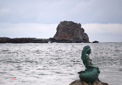

La leyenda de San Ciprián
By: irfan shafiq ahmedLa maruxaina es una fiesta de interés turístico que se celebra cada verano en la localidad gallega de San Ciprián (Lugo) España. La fiesta de la Maruxaina, que se celebra el segundo Sábado de Agosto, es un agradecimiento popular a cuanto significa y produce el mar. Para ello, cuenta la leyenda, que en la costa lucense, en frente de San Cibrao, existe un castillo bajo el agua donde habita una sirena. Unos dicen que la sirena es buena y que utiliza su sabiduría para avisar y librar a los marineros de las inclemencias del mar. Otros, sin embargo, opinan que la sirena es mala y que utiliza sus encantos para hechizar y encandilar a los marineros, y estos se pierdan en el mar y pasen el resto de sus días en su compañía.

Portada por los marineros, tendrá su juicio en la playa del Torno. Es una comitiva en la que todos participan con velas y faroles para ajusticiar y posteriormente dependiendo de si es inocente o no, impartirle su destino. Si es declarada inocente, el pueblo le concede el indulto a la difamada sirena y la fiesta continúa con una gran queimada, si es culpable, le prenden fuego mientras gritan entre músicas y cánticos. Esto pone punto final a este encuentro en la plaza de la villa. Viejos mitos y tradiciones se aúnan aquí con la contemporaneidad.